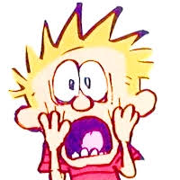
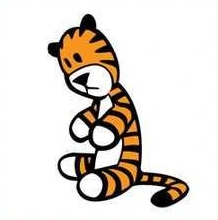
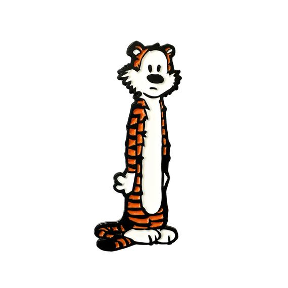

Calvin and Hobbes
Meet the Cast

John Calvin:
John Calvin or beter known as Calvin is the protagonist of this comic series. He is name after french theologian, John Calvin. He is six years old and his best friend is his stuff tiger Hobbes. Calvin even if young prefers his stuff animal rather than people. He is a troublemaker and stubborn, but yet imagainite and precocious. As a child he questions what everyone sees to be as the norm. A true out of the box thinker.


Hobbes:
To the outside world he has the apperance of a stuff tiger, but to his best friend, Calvin he is a tiger whos is better much alive. Hobbes name refers to the philosopher, Thomas Hobbes. Hobbes often participates on Calvin's wild rides of adventure, fantasy and his daily school life. He is aware of the mischief that Calvin does and tries to keep Calvin from misbehaving.

Calvin's Parents
Through the series they remained nameless and are just reffered as "mom" and "dad". They help Calvin by answering life's deepest and philsophical questions and keeping his mischevieous behavior in check. They often refer to "character buidling" for they wish for Calvin to be able to fit into society and not be ousted by society.